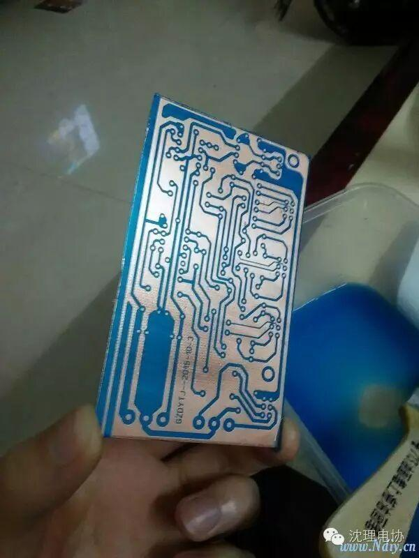
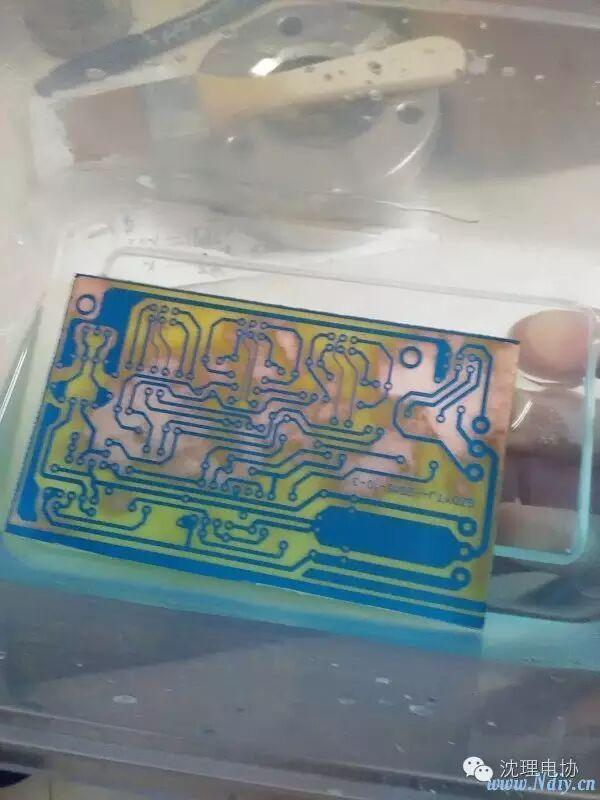
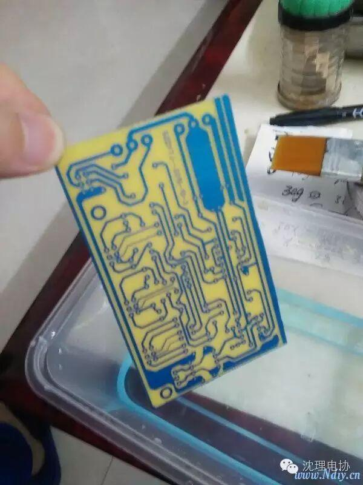
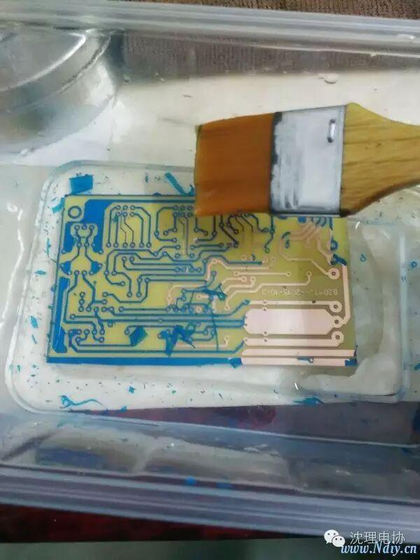
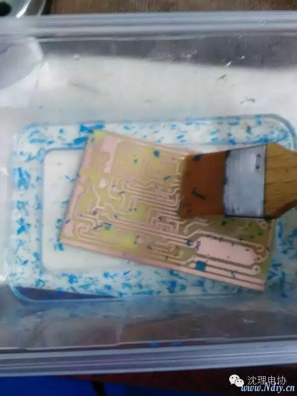
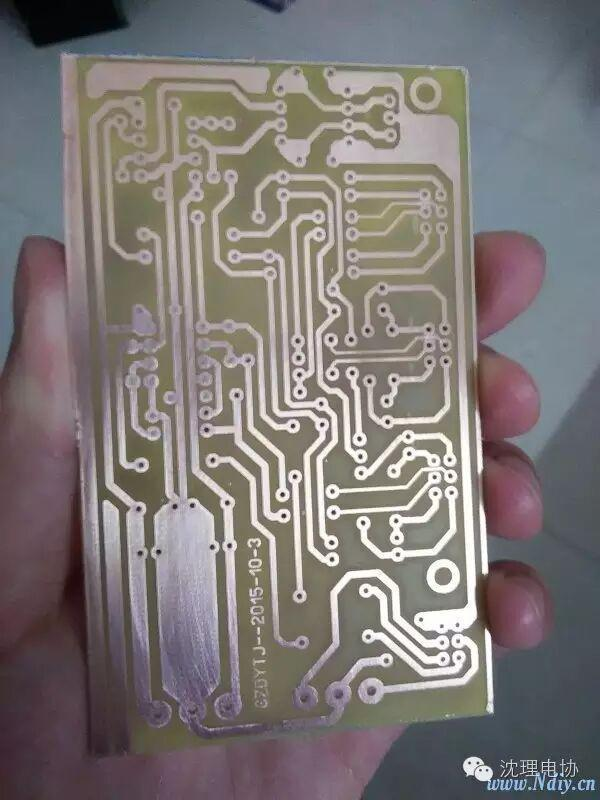
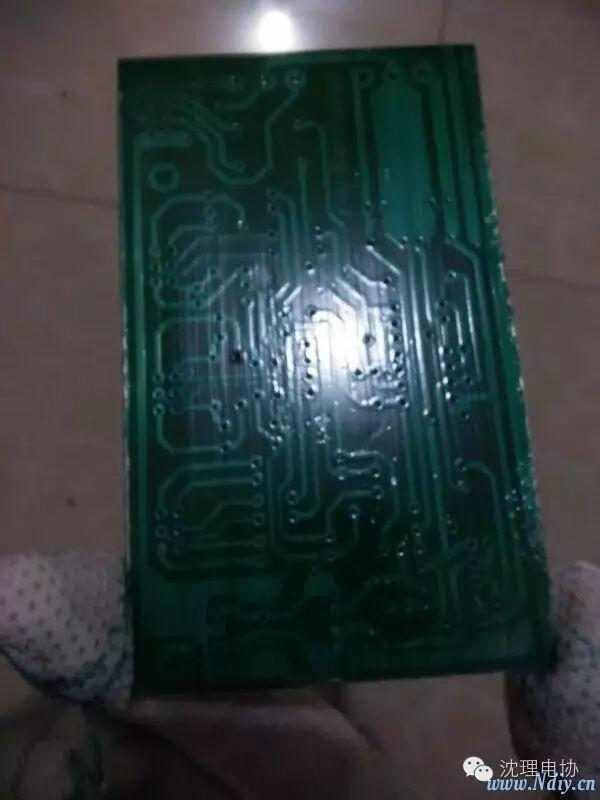

使用小程序
从很久以前（其实也不是很久），就看着前辈们的作品长大。没有别的，就是一百个羡慕。当我还在用传统的洞洞板对着电脑傻着比划的时候，心中总有不甘。嗯！我要冒胆尝试，于是省下了近一个月的伙食费，把材料集齐了。我在学校是问题学生，唉······。其实也对，平时对着黑板就不觉地想起如此的冲动。。。。
好了，下面就是是制作的过程（希望能得到些建议)
第一步，用感光蓝油把覆铜板刷一遍，因为前面的没拍下来就没办法上传了。不过自认为刷的挺好的，嘿嘿
第二步，紫外线晒版灯曝光，我用的是8W的，等之前做好的感光板用风筒热风吹干后晒它三四分钟
第三步，用显影剂显影，一开始以为要在试剂里浪很久，结果等带时间过长，前功尽弃。如果想尝试制作，这一点是必须注意的      
这是一位烧友的设计，不知道有没有不合理的地方。。。
第四步，用环保蚀刻剂进行蚀刻 这绝对是个漫长的过程，呜呜~让我继续等下去。。。。
第五步，脱膜剂脱膜，好激动
第六步，随我大喊一声：成功！！！
总结:这次的制作我是花了比
较多时间的，因此学生我不敢自
夸。
以上内容只是给自己个安慰和鼓
励，以便以后的以后再翻出来怀
恋。
还望大神以后多多指路 。。。。。。。。。。。
最后涂上阻焊绿油，往后重复第二三步，在这里就不赘述了 
好像更难看了，嘻嘻~